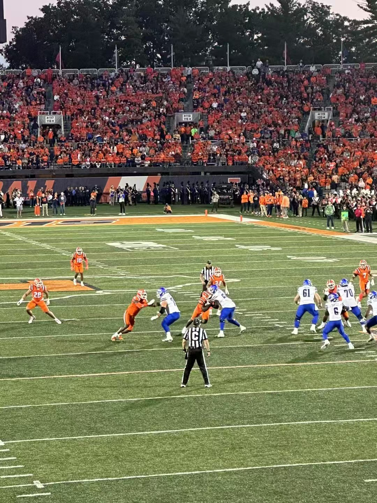
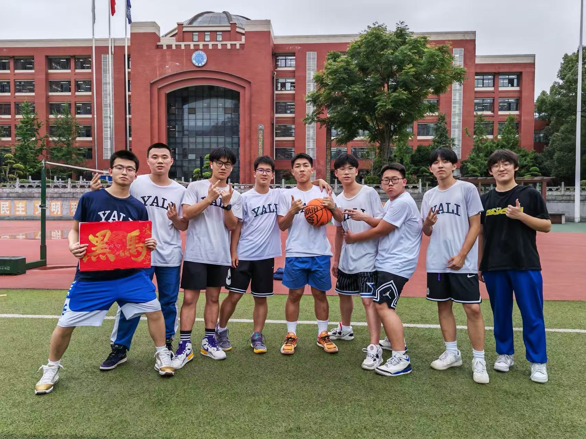
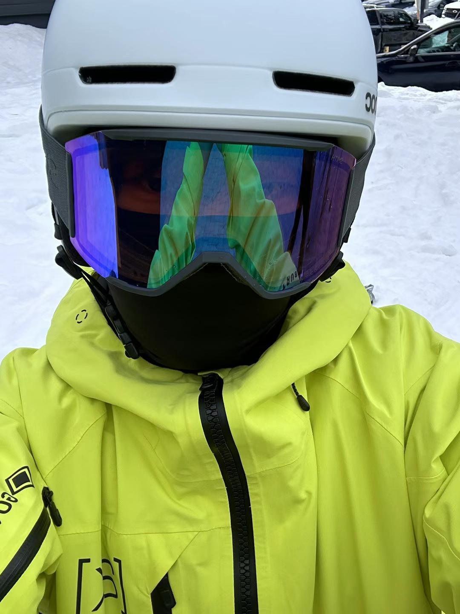
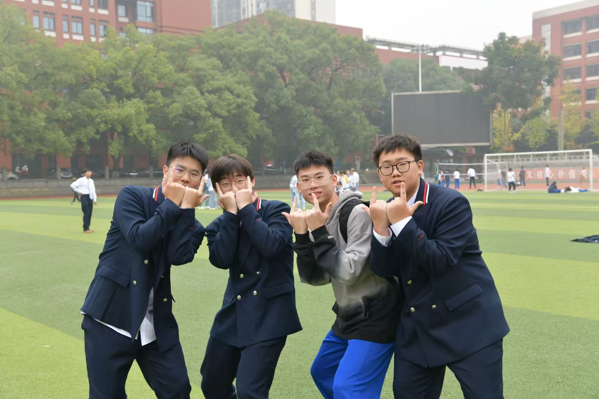
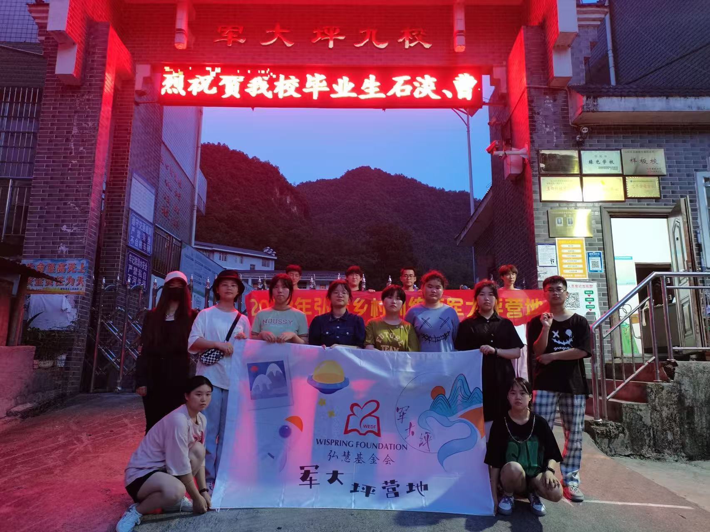
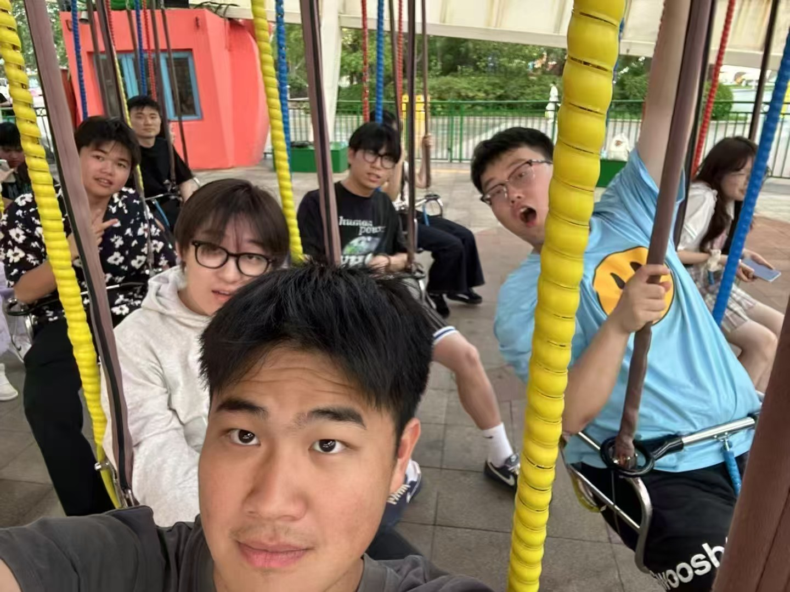
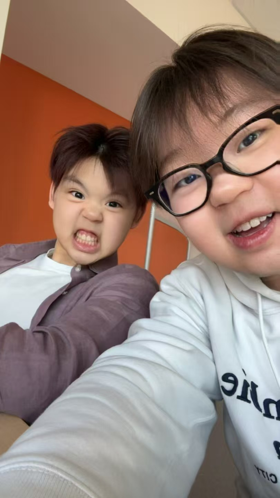
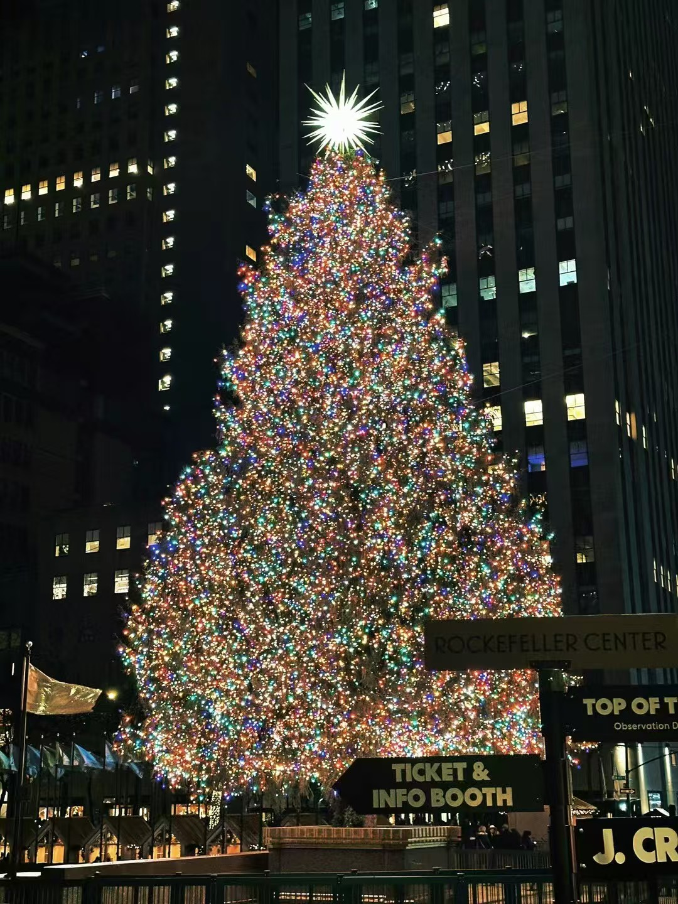
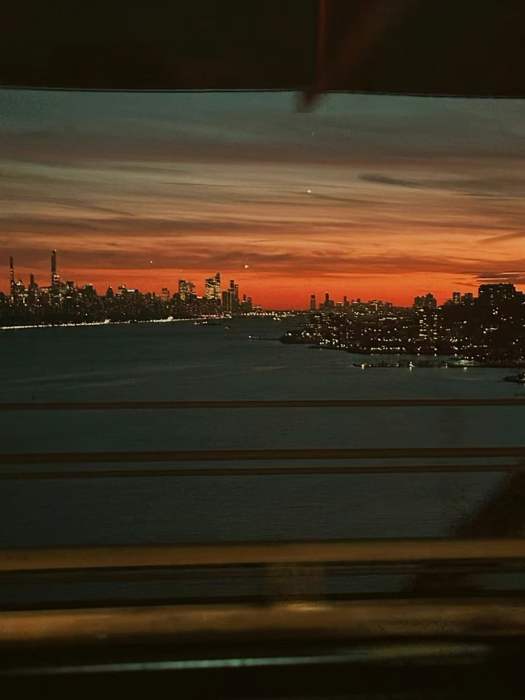
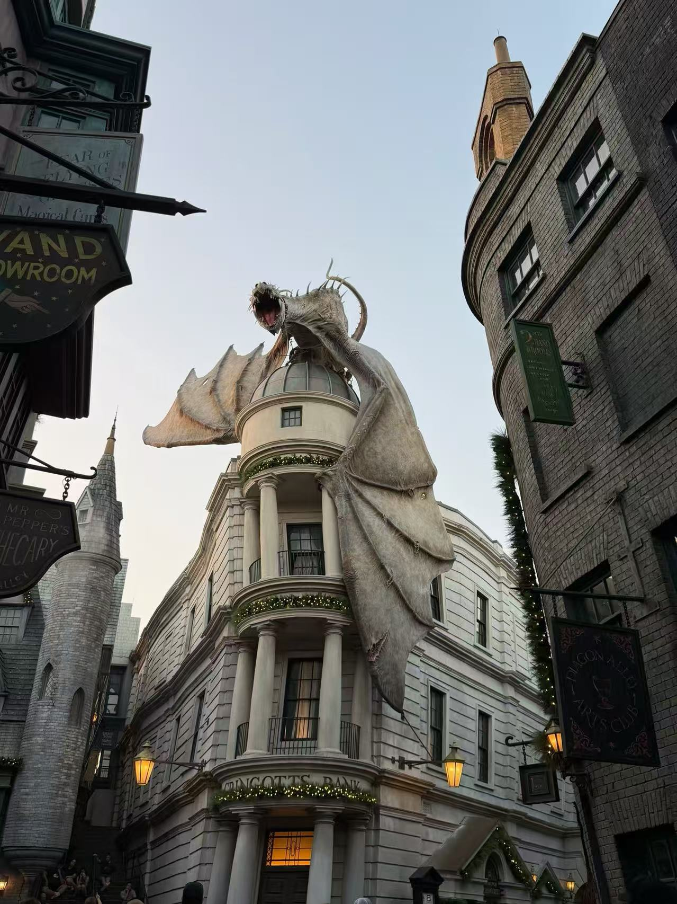

运
运动
Sports
滑雪 + 比赛日
Ski + Game Day


亮黄色滑雪服、橄榄球观赛和球场活动，都是我最喜欢的运动时刻。
Ski days, football games, and time on the field are some of my favorite ways to stay energized.
运动、朋友、旅行和公益，让我的生活保持平衡，也让我一直对新环境保持好奇。
Sports, friendships, travel, and community service keep my life balanced and help me stay curious about the world around me.

运动
Sports

朋友
Friends
旅行
Travel

公益
Service
运动
Sports
滑雪 + 比赛日
Ski + Game Day


亮黄色滑雪服、橄榄球观赛和球场活动，都是我最喜欢的运动时刻。
Ski days, football games, and time on the field are some of my favorite ways to stay energized.
朋友合照
Friends
校园 + 周末
Campus + Weekend


和朋友一起学习、出行、合照，是我课余生活里最开心的一部分。
Studying, traveling, and simply spending time with friends makes campus life much more meaningful to me.
旅行
Travel
城市风景
City Views

我喜欢在旅行中记录城市风景和夜景，感受不同地方的生活节奏。
I like capturing cityscapes and night views while traveling, especially the different rhythms each place carries.
公益
Service
乡村公益
Rural Service


参与乡村公益活动，是我希望长期坚持做的事情。
Community service in rural areas is something I want to keep doing over the long term.